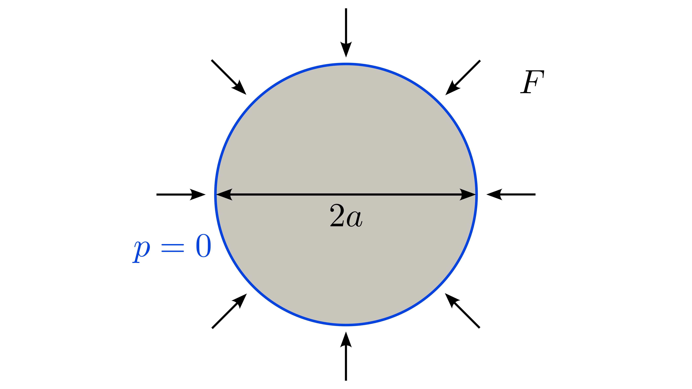
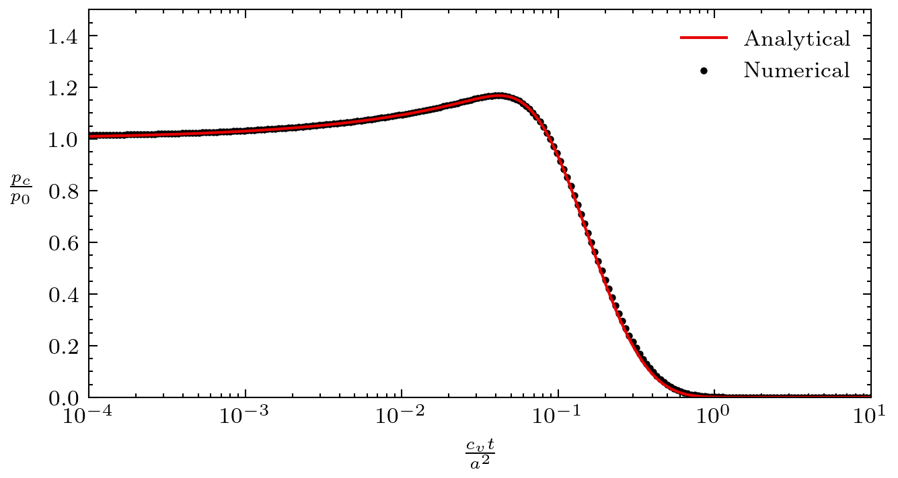

Cryer's problem
The Cryer's problem consists in a spherical soil sample subject to external load with the surface of the sphere considered drained. The fluid pressure increases within the sphere shortly after the external load is applied with its maximum value at the center of the sphere and then progressively decreases as the over pressure drain via the external surface. The original Cryer problem was somewhat simpler than this problem as we consider here both the fluid and solid particles to be compressible.
Setup
The sphere of radius is subject at time to an external force of magnitude normal to its external surface. The external surface is drained. A sketch of the problem setup can be found in Figure 1. Due to symmetry of the problem, we model only an eighth of the sphere.

Figure 1: Setup for the Cryer's problem.
Parameters
Table 1: List of parameters used for the Cryer's problem.
| Symbol | Value | Unit | Name |
|---|---|---|---|
| Pa | Bulk modulus | ||
| - | Poisson's ratio | ||
| - | Biot's poroelastic coefficient | ||
| m | Permeability | ||
| Pa s | Fluid viscosity | ||
| - | Porosity | ||
| Pa | Fluid bulk modulus | ||
| Pa | Applied force |
Here are definitions of some poroelastic parameters:
Solid bulk modulus:
Storage coefficient:
Unnamed parameter
Unnamed parameter
Consolidation coefficient:
Solutions
Verruijt (2016) gives the full solution of this problem using Laplace transforms. Here, we only look at the evolution over time of the fluid pressure at the center of the sphere noted which is given as:
where is given as:
The coefficients are the positive roots of the equation:

Figure 2: Fluid pressure solution for the Cryer's problem.
Complete Source Files
References
- Arnold Verruijt.
Theory and problems of poroelasticity.
Delft University of Technology, 2016.[BibTeX]